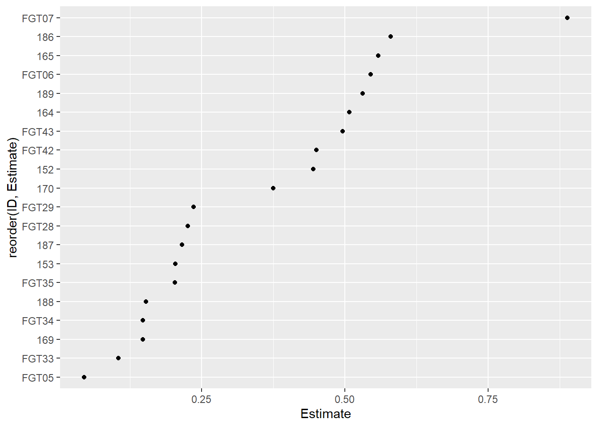

library(DHARMa)
library(emmeans)
library(multcomp)
library(car)
library(performance)
library(gsheet)
library(ggplot2)
library(agricolae)
library(epifitter)
library(dplyr)
library(MASS)
library(tidyverse)
library(lme4)
library(drc)
library(ec50estimator)Modelos
Modelos lineares generalizados
Os modelos lineares generalizados permitem a modelagem de variáveis respostas que não seguem a distribuição normal. São necessáio definir três componentes básico:
Distribuição da probabilidade: padrão de distribuição da variábel resposta. De acordo com a natureza da variável sua distribuição adota comportamentos distinto, sendo necessário respeitar essa distribuição. Por exemplo: Dados contínuos com variância constante seguem a distruibuição gaussiana/normal. Dados de contagem/frequência seguem a distribuição de Poisson. Dados de probabilidade seguem a distribuição binomial.
Preditor linear: Combinação das variáveis preditoras e seus respectivos coeficientes.
\[ \eta = \beta_0 + \beta_1 X_1 + \beta_2 X_2 + \cdots + \beta_p X_p \]
Função de ligação: É a função monotônica que relaciona o preditor linear a média da distribuição, garantindo que o valor predito permaneça dentro da distribuição por meio da tranformação do valor.
Identidade (Gaussiana)
\[ g(\mu) = \eta \]
Log (Poisson)
\[ g(\mu) = \log(\mu) \]
- Logito (Binomial)
\[ g(\mu) = \log\left( \frac{\mu}{1 - \mu} \right) \]
Inicialmente vamos verificar o comportamento e homogenidade das variâncias, para confirmar que os métodos paramétricos não podem ser adotados. Dessa vamos utilizaremos o DHARMa para visualização dos pressupostos.
InsectsDataframe = InsectSprays
InsectsDataframe |>
ggplot(aes(spray, count))+
geom_boxplot(outlier.color=NULL)+
geom_jitter(width=0.1)InsectLM = lm(count ~ spray, data=InsectsDataframe)
plot(simulateResiduals(InsectLM))
shapiro.test(residuals(InsectLM))
Shapiro-Wilk normality test
data: residuals(InsectLM)
W = 0.96006, p-value = 0.02226Ajustando um glm com a distribuição Poisson, adequada a natureza do conjuto de dados, podemos indetificar os grupos distintos de inseticidas.
InsectGLM= glm(count ~spray, data = InsectsDataframe, family=poisson)
mediasGLM = emmeans(InsectGLM, ~spray, type=("response"))
cld(mediasGLM) spray rate SE df asymp.LCL asymp.UCL .group
C 2.08 0.417 Inf 1.41 3.08 1
E 3.50 0.540 Inf 2.59 4.74 12
D 4.92 0.640 Inf 3.81 6.35 2
A 14.50 1.100 Inf 12.50 16.82 3
B 15.33 1.130 Inf 13.27 17.72 3
F 16.67 1.180 Inf 14.51 19.14 3
Confidence level used: 0.95
Intervals are back-transformed from the log scale
P value adjustment: tukey method for comparing a family of 6 estimates
Tests are performed on the log scale
significance level used: alpha = 0.05
NOTE: If two or more means share the same grouping symbol,
then we cannot show them to be different.
But we also did not show them to be the same. check_model(InsectGLM)summary(InsectGLM)
Call:
glm(formula = count ~ spray, family = poisson, data = InsectsDataframe)
Coefficients:
Estimate Std. Error z value Pr(>|z|)
(Intercept) 2.67415 0.07581 35.274 < 2e-16 ***
sprayB 0.05588 0.10574 0.528 0.597
sprayC -1.94018 0.21389 -9.071 < 2e-16 ***
sprayD -1.08152 0.15065 -7.179 7.03e-13 ***
sprayE -1.42139 0.17192 -8.268 < 2e-16 ***
sprayF 0.13926 0.10367 1.343 0.179
---
Signif. codes: 0 '***' 0.001 '**' 0.01 '*' 0.05 '.' 0.1 ' ' 1
(Dispersion parameter for poisson family taken to be 1)
Null deviance: 409.041 on 71 degrees of freedom
Residual deviance: 98.329 on 66 degrees of freedom
AIC: 376.59
Number of Fisher Scoring iterations: 5Modelos Mistos
Modelos mistos permitem trabalharmos com dois diferentes tipos de efeitos ao mesmo tempo. Efeitos fixos, são os efeitos a nível de população cujo impacto sobre a resposta buscamos compreender, esses efeitos deve persistir ao longo das repetições uma vez que não são fonte de aleatoriedade. Efeitos aleatórios, representam fontes de variabilidade que não são de interesse, indicando assim a tendência de variação ao longo de níves de agrupamento.
A utilização de modelos mistos auxiliam a evitar a consideração equivocada de amostras independentes, quando na realidade não são, denominado erro de “pseud-replicação”. Ao tratar a população como um todo levando a um exagerado grau de liberdade e p-valor, levando a conclusões equivocadas. Os modelos mistos são capazes de reconhecer a estrutura de correlação entre os agrupamentos, evitando estimativas enviesadas dos coeficientes dos efeitos fixos.
De forma simplificada, são estimados simultaneamente os coeficientes globais para cada variável preditora dos efeitos fixos, enquanto se é predito o desvio dos coeficientes estimados em cada grupo em relação aos coeficientes globais. Ocorre então um ajuste, “encolhimento”, em que os valores de coeficientes são ajustados para minimizar o desvio reduzindo a variância total.
\[ \mathbf{y} = \mathbf{X}\boldsymbol{\beta} + \mathbf{Z}\boldsymbol{u} + \boldsymbol{\epsilon}, \quad \boldsymbol{u} \sim \mathcal{N}(\mathbf{0},\,\mathbf{G}), \quad \boldsymbol{\epsilon} \sim \mathcal{N}(\mathbf{0},\,\mathbf{R}) \]
\[ \begin{array}{ll}\hline\text{Símbolo} & \text{Definição} \\\hline\mathbf{y} & \text{vetor de observações (n×1), }E(\mathbf{y}) = \mathbf{X}\boldsymbol{\beta}\\\mathbf{X} & \text{matriz de projeto dos efeitos fixos (n×p)}\\\boldsymbol{\beta} & \text{parâmetros dos efeitos fixos (p×1), estimados via ML/REML}\\\mathbf{Z} & \text{matriz de projeto dos efeitos aleatórios (n×q)}\\\mathbf{u} & \text{efeitos aleatórios (q×1), }E(\mathbf{u})=0,\,\mathrm{Var}(\mathbf{u})=\mathbf{G}\\\boldsymbol{\epsilon} & \text{erros residuais (n×1), }E(\boldsymbol{\epsilon})=0,\,\mathrm{Var}(\boldsymbol{\epsilon})=\mathbf{R}\\\mathbf{G} & \text{matriz de covariância dos efeitos aleatórios (q×q)}\\\mathbf{R} & \text{matriz de covariância dos erros residuais (n×n)}\\\hline\end{array} \]
Para exemplificar, consideremos o conjuto de dados abaixo em que foi observada a produtividade de cada híbrido sob dois diferentes métodos, em um experimento dirigido em estrutura DBC.
CornDf = gsheet2tbl("https://docs.google.com/spreadsheets/d/1bq2N19DcZdtax2fQW9OHSGMR0X2__Z9T/edit?gid=1345524759#gid=1345524759")
CornDf# A tibble: 48 × 5
hybrid block method index yield
<chr> <dbl> <chr> <dbl> <dbl>
1 30F53 HX 1 pin 21.1 12920
2 30F53 HX 2 pin 21.1 9870
3 30F53 HX 3 pin 23.3 8920
4 30F53 HX 4 pin 35.6 13120
5 30F53 YH 1 pin 21.1 12060
6 30F53 YH 2 pin 22.2 7860
7 30F53 YH 3 pin 27.3 7410
8 30F53 YH 4 pin 27.8 10300
9 30K64 1 pin 20 11700
10 30K64 2 pin 20 10700
# ℹ 38 more rowsPodemos tratar os blocos como fator aleatório de forma a minimizar o impactos da variabilidade entre blocos nas estimativas. Enquanto avaliamos a influência do efeito fixos index, hybrid e a interação dos mesmo.
CornDf$Id = interaction(CornDf$hybrid, CornDf$block)
MCorn = lmer(index ~hybrid*method + (1|block:Id), data=CornDf)
car::Anova(MCorn)Analysis of Deviance Table (Type II Wald chisquare tests)
Response: index
Chisq Df Pr(>Chisq)
hybrid 11.4239 5 0.04359 *
method 4.6964 1 0.03023 *
hybrid:method 15.8062 5 0.00742 **
---
Signif. codes: 0 '***' 0.001 '**' 0.01 '*' 0.05 '.' 0.1 ' ' 1plot(simulateResiduals(MCorn))
CornDf$predicted <- predict(MCorn)Utilizando a tabela Anova, podemos identificar quais efeitos fixos apresentaram diferenças significativas, e utilizando a biblioteca DHARMa podemos visualizar a normalide e homocedasticidade dos resíduos.
Seguindo a investigação podemos verificar quais híbridos apresentaram se distinguem entre si, em função do método.
CornMeans = emmeans(MCorn, ~hybrid | method)
cld(CornMeans, Letters = letters)method = pin:
hybrid emmean SE df lower.CL upper.CL .group
BG7049H 19.4 3.57 24.9 12.1 26.8 a
30K64 20.6 3.57 24.9 13.2 27.9 a
30F53 YH 24.6 3.57 24.9 17.3 31.9 ab
30F53 HX 25.3 3.57 24.9 17.9 32.6 ab
30S31YH 32.5 3.57 24.9 25.2 39.8 ab
30S31H 38.1 3.57 24.9 30.8 45.4 b
method = silk:
hybrid emmean SE df lower.CL upper.CL .group
BG7049H 19.2 3.57 24.9 11.8 26.5 a
30K64 21.5 3.57 24.9 14.2 28.8 a
30F53 HX 25.0 3.57 24.9 17.7 32.3 a
30F53 YH 26.2 3.57 24.9 18.9 33.6 a
30S31H 26.5 3.57 24.9 19.2 33.8 a
30S31YH 26.6 3.57 24.9 19.3 34.0 a
Degrees-of-freedom method: kenward-roger
Confidence level used: 0.95
P value adjustment: tukey method for comparing a family of 6 estimates
significance level used: alpha = 0.05
NOTE: If two or more means share the same grouping symbol,
then we cannot show them to be different.
But we also did not show them to be the same. Ou então como os métodos se distinguem entre si em função do híbrido.
CornMeans = emmeans(MCorn, ~method | hybrid)
cld(CornMeans, Letters = letters)hybrid = 30F53 HX:
method emmean SE df lower.CL upper.CL .group
silk 25.0 3.57 24.9 17.7 32.3 a
pin 25.3 3.57 24.9 17.9 32.6 a
hybrid = 30F53 YH:
method emmean SE df lower.CL upper.CL .group
pin 24.6 3.57 24.9 17.3 31.9 a
silk 26.2 3.57 24.9 18.9 33.6 a
hybrid = 30K64:
method emmean SE df lower.CL upper.CL .group
pin 20.6 3.57 24.9 13.2 27.9 a
silk 21.5 3.57 24.9 14.2 28.8 a
hybrid = 30S31H:
method emmean SE df lower.CL upper.CL .group
silk 26.5 3.57 24.9 19.2 33.8 a
pin 38.1 3.57 24.9 30.8 45.4 b
hybrid = 30S31YH:
method emmean SE df lower.CL upper.CL .group
silk 26.6 3.57 24.9 19.3 34.0 a
pin 32.5 3.57 24.9 25.2 39.8 a
hybrid = BG7049H:
method emmean SE df lower.CL upper.CL .group
silk 19.2 3.57 24.9 11.8 26.5 a
pin 19.4 3.57 24.9 12.1 26.8 a
Degrees-of-freedom method: kenward-roger
Confidence level used: 0.95
significance level used: alpha = 0.05
NOTE: If two or more means share the same grouping symbol,
then we cannot show them to be different.
But we also did not show them to be the same. Modelos Não Lineares
Modelos não lineares são utilizados quando a relação entre a variável resposta e os preditores não pode ser adequadamente representada por uma combinação linear simples, mesmo após transformações. Diferentemente dos modelos lineares e generalizados, nesses modelos a forma funcional entre as variáveis é explicitamente não linear, podendo envolver exponenciais, logaritmos, polinômios de grau maior, funções sigmoides, entre outras.
A modelagem não linear envolve a especificação de uma função paramétrica, cujo ajuste é feito geralmente por métodos iterativos de otimização, como mínimos quadrados não lineares ou máxima verossimilhança.
Como exemplo vamos trabalhar com um conjunto de dados em que é avaliada a sensibilidade a fungicidas, a partir da contagem de germinação. Naturalmente esse tipo de dado é não linear, adotando um comportamento logístico. Vamos considerar a germinação média entre as reptições e analisar somente um fungicida para maior simplicidade. Para ajuste do modelo utilizaremos a função drm(), especificiando que deve-se utilizar o modelo log logistico (LL.3)
FungicideSensibility = gsheet2tbl("https://docs.google.com/spreadsheets/d/1bq2N19DcZdtax2fQW9OHSGMR0X2__Z9T/edit?gid=465348652#gid=465348652")
FungicideSensibility |>
group_by(code, dose) |>
summarise(germinationMean = mean(germination)) |>
ggplot(aes(dose, germinationMean))+
geom_point()+
facet_wrap(~code)FGT43 = FungicideSensibility |>
group_by(code, dose) |>
summarise(germinationMean = mean(germination)) |>
filter(code=="FGT43")
FGT43Model = drm(germinationMean ~dose,
data=FGT43,
fct=LL.3())
plot(FGT43Model)summary(FGT43Model)
Model fitted: Log-logistic (ED50 as parameter) with lower limit at 0 (3 parms)
Parameter estimates:
Estimate Std. Error t-value p-value
b:(Intercept) 1.219692 0.175081 6.9664 0.006069 **
d:(Intercept) 48.486911 1.456007 33.3013 5.952e-05 ***
e:(Intercept) 0.495895 0.060851 8.1494 0.003864 **
---
Signif. codes: 0 '***' 0.001 '**' 0.01 '*' 0.05 '.' 0.1 ' ' 1
Residual standard error:
1.636105 (3 degrees of freedom)AIC(FGT43Model)[1] 26.7762Como um complemento podemos utilizar a já estabelecida referência de dose efetiva para reduzir 50% para comparar os fungicidas. Utilizando a função estimate_EC50()
EC50Df = estimate_EC50(germination ~ dose,
data=FungicideSensibility,
isolate_col = "code",
strata_col = "state",
interval = "delta",
fct= drc::LL.3())
EC50Df|>
ggplot(aes(reorder(ID,Estimate), Estimate))+
geom_point()+
coord_flip()